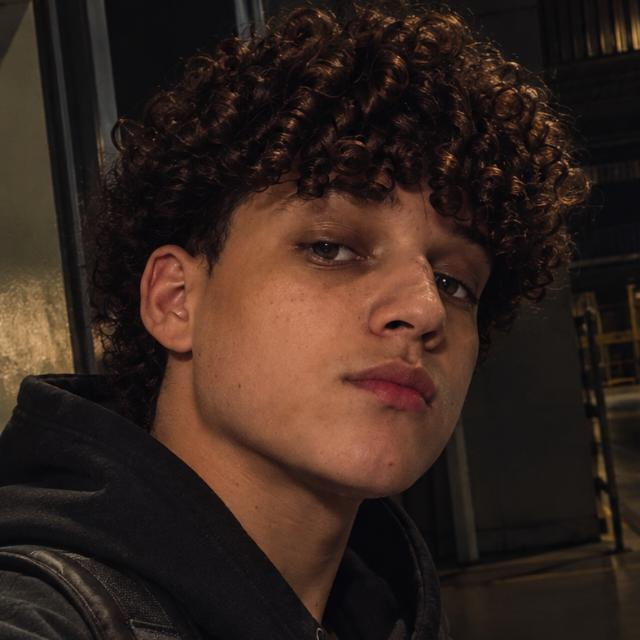

Desenvolvimento de Sistemas
Formação técnica voltada ao desenvolvimento de soluções digitais.
Desenvolvimento + Administração
Técnico em Desenvolvimento de Sistemas pela ETEC e em Administração pelo SENAI. Este é um olhar mais simples e direto sobre a minha trajetória.

IDEIAS → CÓDIGO → EXPERIÊNCIASO que me trouxe até aqui
Formação técnica voltada ao desenvolvimento de soluções digitais.
Formação técnica que complementa o olhar sobre organização e negócios.
Código em prática
Uma releitura do trabalho de conclusão de curso sobre proteção animal.
Um seletor de personagens com interação por mouse, toque e teclado.
Um estudo de jogo em JavaScript, agora com placar, pausa e controles claros.
Próxima conversa
Meus repositórios públicos, estudos e experimentos estão no GitHub.
github.com/Bielpixel ↗